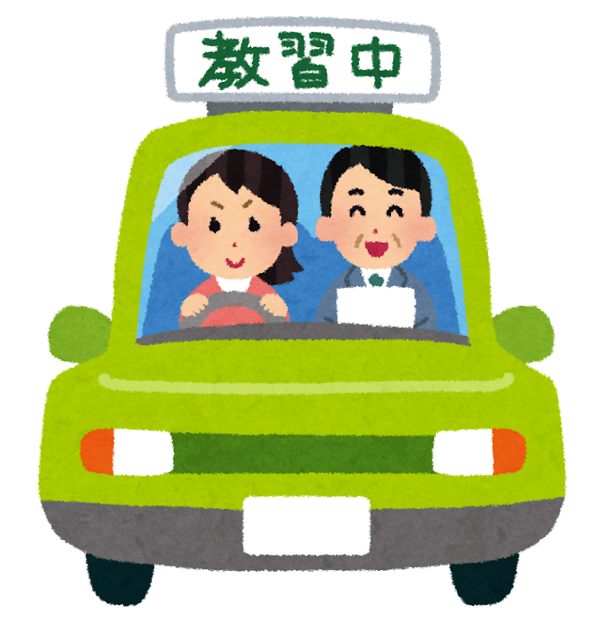

文字サイズ変更

運転講習会とは、実車を使用して環境に易しい運転方法を学ぶ講習会です。インストラクターが同乗し、地球温暖化帽子 のためにできる事を直接教えします。
受講料 全日 3300円(JAF会員) 4400円(一般) 半日 1100円(JAF会員) 2200円(一般)
参加者体験談 初心に戻り姿勢をただしたら疲れ方が変わった。 自己流になっていた乗車姿勢やハンドル操作を見直すきっかけとなりました。 自分の運転技術トマイカーの特性が理解できた。 指導者が親切で初心者でも理解しやすい。費用も安い。
高齢者講習
公安委員会～の指定講座高齢者講習運転免許所の更新期間が満了する火における 年齢が70歳以上の方が免許更新んする前に受けなければならない講習
初心運転者講習
運転免許取得語一年以内に交通違反事故等により合計点数3点以内に達した 方に対する講習です。